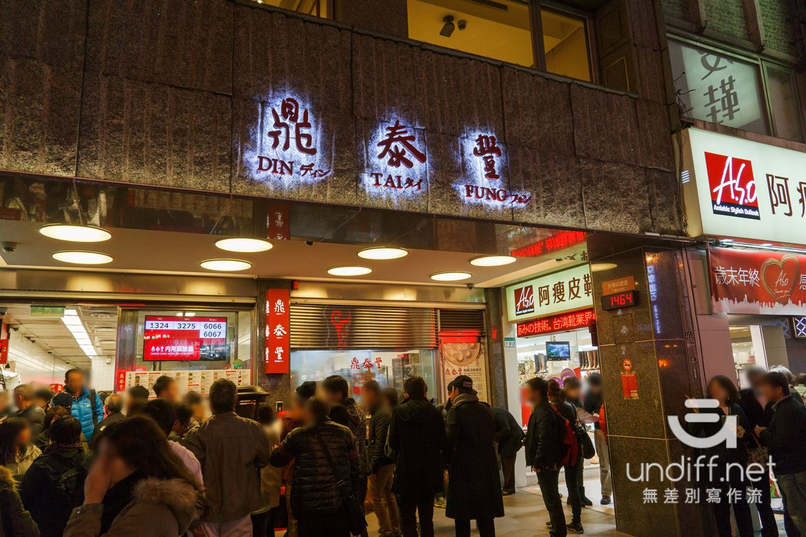

Din Tai Fung is a well-known restaurant opened in Taiwan since 1958. Xiaolongbao is the most famous cuisine at Din Tai Fung, but it is also known for the high quality service and dishes.
Inspite of the long wait time of Din Tai Fung, people from around the world keep heading for the delicious dishes. Din Tai Fung provides with multi-language service and creates comfortable dining environments.
The service and cuisine at Din Tai Fung is no doubt a high level restaurant in Taiwan, or even around the world. I felt relaxed and delighted when dining in. Though the price is higher, Din Tai Fung worth it.